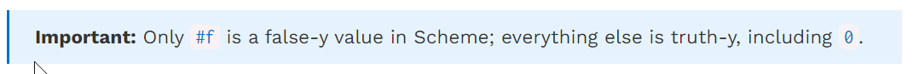

Scheme List Mini-lec
- (= <a> <b>) returns true if a(a number) equals b(a number)
- (eq? <a> <b?) returns true if a and b are the same primitive values, similar to Python is
- (equal? <a> <b>) is specifically for the case where if the contents of a ( list) is the same as the contents of b (another list). If a and b are not lists, equal? is the same as eq?
(define a (1,2,3))
Scheme: CALL EXPRESSIONS Call expressions apply a procedure to some arguments.
(<operator> <operand1> <operand2> ...)
Call expressions in Scheme work exactly like they do in Python. To evaluate them:
- Evaluate the operator to get a procedure.
- Evaluate each of the operands from left to right.
- Apply the value of the operator to the evaluated operands.
For example, consider the call expression (+ 1 2). First, we evaluate the symbol + to get the built-in addition procedure. Then we evaluate the two operands 1 and 2 to get their corresponding atomic values. Finally, we apply the addition procedure to the values 1 and 2 to get the return value 3.
Operators may be symbols, such as + and *, or more complex expressions, as long as they evaluate to procedure values.
Here is a reference for the Scheme Built-In Procedures.
scm> (- 1 1) ; 1 - 1
0
scm> (* (+ 1 2) (+ 1 2)) ; (1 + 2) * (1 + 2)
9
Special Forms¶
Special form expressions contain a special form as the operator. Special form expressions do not follow the same rules of evaluation as call expressions. Each special form has its own rules of evaluation -- that's what makes them special! Here's the Scheme Specification to reference the special forms we will cover in this class.
It is important to note that everything in Scheme is either an atomic or an expression, so although these special forms look and operate similarly to Python, they are evaluated differently.
Special forms like if, cond, and, or in Python direct the control flow of a program and allow you to evaluate specific expressions under some condition. In Scheme, however, these special forms are expressions that take in a set amount of parameters and return some value based on the condition passed in.
If Expression
An if expression looks like this:
(if <predicate> <if-true> [if-false])
<predicate> and <if-true> are required expressions and [if-false] is optional.
The rules for evaluation are as follows:
- Evaluate
<predicate>. - If
<predicate>evaluates to a truth-y value, evaluate<if-true>and return its value. Otherwise, evaluate[if-false]if provided and return its value.
if is a special form as not all of its operands will be evaluated. The value of the first operand determines whether the second or the third operator is evaluated.

Boolean operators
Like Python, Scheme has the boolean operators and, or, and not. and and or are special forms because they are short-circuiting operators, while not is a builtin procedure.
andtakes in any amount of operands and evaluates these operands from left to right until one evaluates to a false-y value. It returns that first false-y value or the value of the last expression if there are no false-y values.oralso evaluates any number of operands from left to right until one evaluates to a truth-y value. It returns that first truth-y value or the value of the last expression if there are no truth-y values.nottakes in a single operand, evaluates it, and returns its opposite truthiness value.
All Scheme procedures are constructed as lambda procedures.
One way to create a procedure is to use the lambda special form.
(lambda (<param1> <param2> ...) <body>)
This expression creates a lambda function with the given parameters and body, but does not evaluate the body. As in Python, the body is not evaluated until the function is called and applied to some argument values. The fact that neither the parameters nor the body is evaluated is what makes lambda a special form.
We can also assign the value of an expression to a name with a define special form:
(define (<name> <param> ...) <body> ...)(define <name> (lambda (<param> ...) <body> ...))
These two expressions are equivalent; the first is a concise version of the second.
scm> ; Bind lambda function to square
scm> (define square (lambda (x) (* x x))) square scm> (define (square x) (* x x)) ; Same as above square
scm> square (lambda (x) (* x x))
scm> (square 4) 16
if Expressions¶
The if special form allows us to evaluate one of two expressions based on a predicate. It takes in two required arguments and an optional third argument:
(if <predicate> <if-true> [if-false])
The first operand is what's known as a predicate expression in Scheme, an expression whose value is interpreted as either #t or #f.
The rules for evaluating an if special form expression are as follows:
- Evaluate
<predicate>. - If
<predicate>evaluates to a truth-y value, evaluate and return the value if the expression<if-true>. Otherwise, evaluate and return the value of[if-false]if it is provided.
Can you see why this expression is a special form? Compare the rules between a regular call expression and an if expression. What is the difference?
Step 2 of evaluating call expressions requires evaluating all of the operands in order. However, an
ifexpression will only evaluate two of its operands, the conditional expression and either<true-result>or<false-result>. Because we don't evaluate all the operands in anifexpression, it is a special form.
Let's compare a Scheme if expression with a Python if statement:
Scheme
Python
scm> (if (> x 3)
1
2)
>>> if x > 3:
... 1
... else:
... 2
Although the code may look the same, what happens when each block of code is evaluated is actually very different. Specifically, the Scheme expression, given that it is an expression, evaluates to some value. However, the Python if statement simply directs the flow of the program.
Another difference between the two is that it's possible to add more lines of code into the suites of the Python if statement, while a Scheme if expression expects just a single expression for each of the true result and the false result.
One final difference is that in Scheme, you cannot write elif cases. If you want to have multiple cases using the if expression, you would need multiple branched if expressions:
cond Expressions¶
Using nested if expressions doesn't seem like a very practical way to take care of multiple cases. Instead, we can use the cond special form, a general conditional expression similar to a multi-clause if/elif/else conditional expression in Python. cond takes in an arbitrary number of arguments known as clauses. A clause is written as a list containing two expressions: (<p> <e>).
(cond
(<p1> <e1>)
(<p2> <e2>)
...
(<pn> <en>)
[(else <else-expression>)])
The first expression in each clause is a predicate. The second expression in the clause is the return expression corresponding to its predicate. The optional else clause has no predicate.
The rules of evaluation are as follows:
- Evaluate the predicates
<p1>,<p2>, ...,<pn>in order until you reach one that evaluates to a truth-y value. - If you reach a predicate that evaluates to a truth-y value, evaluate and return the corresponding expression in the clause.
- If none of the predicates are truth-y and there is an
elseclause, evaluate and return<else-expression>.
As you can see, cond is a special form because it does not evaluate its operands in their entirety; the predicates are evaluated separately from their corresponding return expression. In addition, the expression short circuits upon reaching the first predicate that evaluates to a truth-y value, leaving the remaining predicates unevaluated.
The following code is roughly equivalent (see the explanation in the if expression section):
Scheme
Python
scm> (cond
((> x 0) 'positive)
((< x 0) 'negative)
(else 'zero))
>>> if x > 0:
... 'positive'
... elif x < 0:
... 'negative'
... else:
... 'zero'